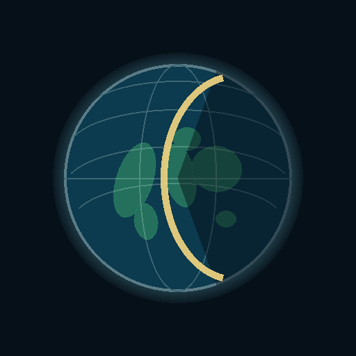

GlobeMap
Add to Home Screen or Dock
Personal static app. Serve the folder over HTTP on your Mac, then install it from Safari. No App Store, no developer account, no re-sign.

iPad
- Open this site in Safari (a local address or the Pages URL you uploaded).
- Tap Share, then Add to Home Screen.
- Name it GlobeMap. It opens full screen, with its own storage, separate from Safari tabs.
Mac
- Open this site in Safari on macOS Sonoma or later.
- Choose File → Add to Dock.
- GlobeMap is saved under Applications and keeps its own cookies and cache.
Open the globe from an http:// address. A file:// window will not start the map worker.
Manifest
Linked as manifest.webmanifest. Safari and Chromium read this for the installed name, start URL, and icons.
Loading manifest…